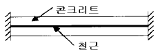
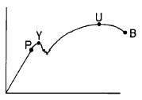
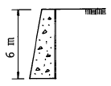
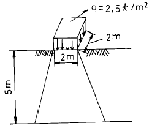

건설재료시험산업기사 (2003-03-16 기출문제)
1과목: 콘크리트공학
1. 콘크리트 표준시방서에서는 일평균 기온이 얼마 이하일 때 한중콘크리트의 적용을 받도록 규정하고 있는가?
- 4℃
- 0℃
- -2℃
- -5℃
(정답률: 알수없음)

2. 수중콘크리트의 시공에 관하여 잘못 기술한 것은?
- 정수중에 치는 것을 원칙으로 한다.
- 콘크리트를 수중에 낙하시키지 않는 것이 좋다.
- 프리팩트 콘크리트를 효과적으로 이용하면 좋다.
- 트레미보다는 밑열림 포대를 이용하는 것이 좋다.
(정답률: 73%)
3. 고강도 콘크리트에 대한 설명으로 옳지 않은 것은?
- 압축강도의 크기에 대한 정의가 다양하지만 약 400㎏f/cm2 이상인 콘크리트를 의미한다.
- 단위시멘트량은 소요의 워커빌리티 및 강도를 얻을수 있는 범위내에서 가능한 적게 되도록 한다.
- 물 -시멘트비는 50%이하로 한다.
- 제조 원리는 물-시멘트비와 공극비를 줄여야 하지만 골재와의 부착을 증대시키기 위해 시멘트 이외의 결합재를 사용해서는 안된다.
(정답률: 알수없음)
4. 굳지 않은 콘크리트의 배합이 예정대로 되어 있는지의 여부와 각 재료의 배합상태를 알기 위해 실시하는 시험은 어느 것인가?
- 굳지 않은 콘크리트의 씻기 분석 시험
- 굳지 않은 콘크리트의 공기량 시험
- 굳지 않은 콘크리트의 단위용적중량 시험
- 콘크리트의 블리딩 시험
(정답률: 알수없음)
5. 한중 콘크리트의 시공에서 콘크리트의 온도를 높이기 위하여 가열해서는 안되는 재료는?
- 시멘트
- 물
- 잔골재
- 굵은골재
(정답률: 알수없음)
6. 콘크리트 시공시 습윤양생을 할 경우 보통포틀랜드 시멘트를 사용했다면 습윤상태로 보호해야 할 표준기간은?
- 3 일
- 5 일
- 7 일
- 28 일
(정답률: 알수없음)
7. 블레인 공기투과장치가 사용되는 시험은?
- 시멘트의 응결시간 측정
- 시멘트의 비중 측정
- 시멘트의 분말도 측정
- 콘크리트의 공기량 측정
(정답률: 알수없음)
8. 압축강도에 의해 콘크리트 품질관리를 할 경우에 대해 설명한 것 중 잘못된 것은?
- 일반적인 경우 조기재령의 압축강도에 의한다.
- 압축강도의 1회 시험값은 동일배치에서 취한 공시체 3개에 대한 평균값으로 한다.
- 시험값에 의해 품질을 관리할 경우 관리도 및 산포도 곡선을 이용하는 것이 좋다.
- 시험용 시료채취 시기 및 횟수는 하루에 치는 콘크리트마다 적어도 1회, 또는 연속하여 치는 콘크리트의 20∼150m3마다 1회로 한다.
(정답률: 알수없음)
9. 콘크리트의 내구성을 결정 짓는 요인 중 외적 원인에 의한 것은?
- 알칼리 골재반응
- 체적 변화
- 투수성
- 동결 융해
(정답률: 알수없음)
10. 다음은 서중 콘크리트의 관리에 주의할 사항이다. 이중 적당하지 않는 것은?
- 콘크리트 타설온도는 40℃이하로 유지한다.
- 비빈 콘크리트는 1.5시간 이내로 운반 타설한다.
- 타설 후 적어도 24시간은 노출면을 습윤상태로 유지한다.
- 기온이 높고 습도가 낮을 때에는 증발, 건조가 빨라지므로 균열방지에 주의한다.
(정답률: 알수없음)
11. 콘크리트 품질관리중 매우 중요한 사항이 양생관리이다. 주의할 사항중 틀린 것은?
- 양생효과는 장기강도에 영향을 끼치므로 28일 이후의 양생에 주의해야 한다.
- 수밀성 콘크리트의 습윤양생 기간은 가능한 한 길게 할 필요가 있다.
- 콘크리트를 타설 후 급격히 온도가 상승할 경우 콘크리트가 건조하지 않도록 주의한다.
- 콘크리트를 타설 후 경화를 시작하기까지 일광의 직사를 피해야 한다.
(정답률: 알수없음)
12. 시멘트모르터의 압축강도시험을 실시하기 위해 공시체 제작시에 필요한 시멘트와 표준사(모래)의 중량배합비율은 한국산업규격에 얼마로 규정되어 있는가?
- 1:2.35
- 1:2.45
- 1:2.50
- 1:2.55
(정답률: 알수없음)
13. 잔골재의 절대용적 290ℓ , 굵은골재의 절대용적 510ℓ 인 콘크리트의 잔골재율은 얼마인가?
- 29.0%
- 30.46%
- 36.25%
- 56.86%
(정답률: 30%)
14. 무근 콘크리트 배합설계시 단면이 큰 경우 슬럼프의 표준 값으로 맞는 것은?
- 3 ∼ 8 cm
- 4 ∼ 13 cm
- 10 ∼ 15 cm
- 15 ∼ 18 cm
(정답률: 알수없음)
15. 레디믹스트콘크리트에 관한 설명 중 틀린 것은?
- 레디믹스트콘크리트의 종류는 보통콘크리트, 경량콘크리트로 구분된다.
- 호칭강도는 강도시험시 재령 28일에서의 배합강도를 의미하는 것이다.
- 강도시험을 한 경우 1회의 시험결과는 지정된 호칭강도의 85%이상이어야 한다.
- 염화물함유량의 한도는 염소이온량으로서 0.30kg/m3이하로 해야 한다.
(정답률: 20%)
16. 굳지않은 콘크리트의 성질을 나타내는 용어중 옳은 것은?
- 반죽질기(consistency)란 수량의 다소에 따른 반죽의 되고 진 정도를 말한다.
- 피니셔빌리티(finishability)란 반죽질기에 따른 작업의 난이도 및 재료분리에 저항하는 정도를 나타낸다.
- 성형성(plasticity)이란 골재의 최대치수, 잔골재율, 잔골재의 입도, 반죽질기에 따르는 마무리하기 쉬운 정도를 나타낸다.
- 워커빌리티(workability)란 거푸집에 쉽게 다져 넣을 수 있고, 거푸집을 제거하면 천천히 형상이 변하기는 하지만 허물어지거나, 재료가 분리하지 않는 정도를 나타낸다.
(정답률: 알수없음)
17. 콘크리트의 장기거동을 지배하는 주요 현상인 크리프(creep)에 대하여 옳게 설명한 것은?
- 변형이 일정할 때 응력이 감소하는 현상이다.
- 하중이 제거되어도 크리프변형률은 회복되지 않는다.
- 온도가 높을수록 습도가 낮을수록 크리프변형은 커진다.
- 재하시의 콘크리트 재령이 클수록 크리프가 많이 발생한다.
(정답률: 알수없음)
18. 그림과 같이 양단이 구속된 철근콘크리트 부재에서 콘크리트의 건조수축이 발생할 경우 철근 및 콘크리트에 일어나는 응력을 바르게 나타낸 것은?

- 철근-인장응력, 콘크리트 - 압축응력
- 철근-압축응력, 콘크리트 - 인장응력
- 철근-응력발생 없음, 콘크리트 - 인장응력
- 철근-압축응력, 콘크리트 - 응력발생 없음
(정답률: 28%)
19. 소정의 안전도를 확보하기 위하여 프리텐션 방식의 PS 콘크리트에서 프리스트레싱을 할 때의 콘크리트 압축강도는 최소 얼마 이상이어야 하는가?
- 240 kgf/cm2
- 270 kgf/cm2
- 300 kgf/cm2
- 350 kgf/cm2
(정답률: 알수없음)
20. 콘크리트 시방배합 설계 결과, 굵은 골재량이 1000kgf/m3이며, 잔골재량이 700kgf/m3 이었다. 이 배합을 골재의 입도에 대한 보정을 수행한 결과, 굵은골재량이 1100kgf/m3으로 바뀌었다. 이때 보정된 잔골재량은 얼마인가?
- 600 kgf/m3
- 640 kgf/m3
- 660 kgf/m3
- 700 kgf/m3
(정답률: 알수없음)
2과목: 건설재료 및 시험
21. 잔골재와 굵은골재의 조립율이 각각 2.5, 7.5이고 혼합비율이 1:1.5인 혼합 골재의 조립율(FM)은?
- 13.8
- 10.0
- 5.5
- 3.0
(정답률: 73%)
22. AE제를 사용한 콘크리트에 나타나는 성질로서 다음중 옳은 것은?
- 철근과의 부착강도가 크다.
- 응결경화시 발열량이 크다.
- 단위수량이 크다.
- 수밀성이 크다.
(정답률: 알수없음)
23. 합판의 제조방법 중에서 넓은 폭의 합판이 얻어지며 낭비가 없고 가장 널리 사용되는 것은?
- 로타리 베니어(rotary cut veneer)
- 슬라이스드 베니어(sliced veneer)
- 소드 베니어(sawed veneer)
- 플라이우드 베니어(plywood veneer)
(정답률: 알수없음)
24. 그림과 같은 강(鋼)의 응력-변형 곡선에서 항복점은?

- P
- Y
- U
- B
(정답률: 알수없음)
25. 시멘트 원료인 점토중의 산화철을 제거하거나 대용원료를 사용하여 제조하며, 또한 소성연료로 석탄대신 중유를 사용하여 제조하는 시멘트는?
- 고로 시멘트
- 백색 포틀랜드 시멘트
- 조강 포틀랜드 시멘트
- 중용열 포틀랜드 시멘트
(정답률: 알수없음)
26. 건설공사 품질시험기준중 흙댐의 중심점토의 시험방법에 포함되지 않는 것은?
- 함수량시험
- 다짐시험
- 현장밀도시험
- 평판재하시험
(정답률: 24%)
27. 시멘트 모르터의 압축강도시험에서 시멘트량이 240gf일때 표준사의 중량은?
- 480gf
- 524gf
- 588gf
- 600gf
(정답률: 알수없음)
28. 다음중 천연석유가 지층의 갈라진 틈사이에 삼입(渗入)한 후 지열이나 공기등의 작용으로 오랜 세월 사이에 그내부에 중합, 축합 반응을 일으켜서 생긴 것은 어느것인가?
- 아스팔타이트
- 레이크아스팔트
- 록크아스팔트
- 샌드아스팔트
(정답률: 알수없음)
29. 폭약에 관한 다음 설명 중 옳지 않은 것은?
- 다이너마이트의 주성분은 니트로글리세린이다.
- T.N.T는 도화선만으로 폭발시킬 수 없다.
- 도화선의 심약으로 주로 흑색 화약을 사용한다.
- 흑색 화약의 주성분은 황산염이다.
(정답률: 알수없음)
30. 다음 중 골재의 단위용적중량 시험방법으로 사용하지 않는 것은?
- 봉다짐 시험방법
- 지깅(Jigging) 시험방법
- 삽(Shovel) 시험방법
- 길모어(Gillmore) 시험방법
(정답률: 알수없음)
31. 다음중에서 폭약으로 칼릿(carlit)의 사용이 부적당한 곳은?
- 채석장에서 큰 석재의 채취용
- 경질토사의 절취용
- 터널공사의 발파용
- 암석의 절취 또는 제거용
(정답률: 알수없음)
32. 다음 중에서 그라우트(grout)용 혼화제로서 필요한 성질에 해당하지 않는 것은?
- 재료의 분리가 일어나지 않아야 한다.
- 단위수량이 작고 블리딩이 작아야 한다.
- 주입이 쉬워야하며 공기를 연행시켜야 한다.
- 그라우트를 수축시키는 성질이 있어야 한다.
(정답률: 알수없음)
33. 다음 설명중 플라스틱 재료의 일반적 성질이 아닌 것은?
- 소성, 가공성이 좋다.
- 전기 절연성이 크다.
- 접착력이 작으며 전성이 있다.
- 내산성과 내알칼리성이 있다.
(정답률: 25%)
34. 어떤 시멘트의 비중을 측정하기 위해 르샤틀리에 비중병에 목부분의 0.5 눈금까지 광유를 넣은 다음 시멘트 64.0g을 넣고 기포를 제거한 다음 눈금을 읽으니 20.8 이었다. 이 시멘트의 비중은?
- 3.01
- 3.08
- 3.15
- 3.21
(정답률: 알수없음)
35. 건설공사 품질시험기준중 노체의 현장밀도 시험은 몇 m3마다 성토 다짐시 하여야 하는가?
- 1000m3
- 2000m3
- 3000m3
- 4000m3
(정답률: 알수없음)
36. 컷트백 아스팔트 중 중유로 용해시켜 먼지막기용이나 표면처리 일부에 쓰이고 침투성이나 혼합성은 가장 좋지만 작업효율이 떨어지는 것은?
- PC
- RC
- MC
- SC
(정답률: 알수없음)
37. 잔골재의 절대건조상태의 중량이 250gf, 공기중 건조상태의 중량이 260gf, 표면건조포화상태의 중량이 280gf, 습윤상태의 중량이 300gf일 때 흡수율과 표면수율은 각각 얼마인가?
- 흡수율=12 %, 표면수율=7.1 %
- 흡수율=7.7 %, 표면수율=15.4 %
- 흡수율=12 %, 표면수율=15.4 %
- 흡수율=7.7 %, 표면수율=7.1 %
(정답률: 28%)
38. 아스팔트 침입도 시험에 관한 다음 설명중 틀린 것은?
- 시료는 액상이 될때까지 가열한다.
- 침입도 항온수조의 온도는 25℃가 표준이다.
- 침의 관입량은 1㎜단위로 나타낸 값을 침입도 1로 한다.
- 사람과 장치가 같은 경우는 2회의 시험결과와 두평균치의 차가 4%를 넘으면 안된다.
(정답률: 알수없음)
39. 다음 석재 중 압축강도가 가장 큰 것은?
- 사암
- 화강암
- 사문암
- 응회암
(정답률: 알수없음)
40. 콘크리트용 화학혼화제에 대한 일반적인 성질 중 틀린 것은?
- AE제에 의해서 콘크리트의 연행공기량이 증가하면 압축강도, 휨강도 및 탄성계수 모두 저하한다.
- AE제에 의한 연행공기량은 일반적으로 4∼7% 정도가 표준이며 워커빌리티 개선효과가 있다.
- 응결촉진제는 시멘트의 분산작용을 도와 단위수량을 감소시켜 압축강도를 증가시키는 효과가 있다.
- 콘크리트의 응결을 촉진시키기 위해서는 염화칼슘이 많이 사용되지만 철근부식을 촉진시킬 위험이 있다.
(정답률: 16%)
3과목: 건설시공학
41. 용수, 배수, 운하등 성질이 다른 수로가 교차하지만 합류 시킬 수 없을 때 또는 수로교로서는 안될 때 일반적으로 사용되는 관거는?
- 함거
- 관암거
- 다공관거
- 사이펀관거
(정답률: 알수없음)
42. 발파에 의한 암석의 굴착방법중 빈구멍을 자유면으로 하여 평행폭파를 하는 것으로 버럭의 비산거리가 짧고 좁은 도갱에서의 긴 구멍의 발파에 편리한 방법은?
- 번컷
- 밴치컷
- 스윙컷
- 피라미드컷
(정답률: 알수없음)
43. 건설기계 규격의 일반적인 표현 방법으로 옳은 것은?
- 불도져 - 토공판(blade)의 길이(m)
- 트랙터 쇼벨 - 버킷용량(m3)
- 모우터그레이더 - 최대견인력(t)
- 모우터스크레이퍼 - 중량(t)
(정답률: 30%)
44. F.C.M공법의 구조형식에 따른 분류에서 연속보형식의 특징으로 옳지 않은 것은?
- 상하부가 일체이므로 교좌장치가 필요없다.
- 주행성이 양호하다.
- 장기처짐의 우려가 크지 않다.
- 교각과 상부거더를 분리하고 중앙부가 강결되어 있다.
(정답률: 알수없음)
45. 공사관리의 진행 방법 순서로 옳은 것은?
- 통제 - 실시 - 계획
- 실시 - 계획 - 통제
- 계획 - 실시 - 통제
- 통제 - 계획 - 실시
(정답률: 70%)
46. 포장의 유지보수 공법에서 아스팔트 포장의 부분적 균열, 포트홀(pothole)등의 파손부를 포장재료로 채우는 응급적인 처리방법을 무엇이라 하는가?
- 표면처리
- 팻칭(Patching)
- 덧씌우기(Overlay)
- 절삭재포장
(정답률: 알수없음)
47. 보통 흙을 재료로 하여 850m3의 성토를 할 경우 굴착해야 할 토량은 얼마인가? (단, L = 1.25, C= 0.85)
- 1,250m3
- 680m3
- 1,000m3
- 578m3
(정답률: 알수없음)
48. 연약지반 개량공법 중 동결공법의 특징으로 옳지 않은 것은?
- 모든 토질에 적용할 수 있다.
- 차수성이 양호한 공법이다.
- 공사비가 저렴한 공법이다.
- 화학적 물질이 많을때에는 동결이 잘 되지 않는다.
(정답률: 0%)
49. 무근 콘크리트나 벽돌 쌓기 형식으로 시공하는 옹벽은?
- L 형 옹벽
- 역T 형 옹벽
- 부벽식 옹벽
- 중력식 옹벽
(정답률: 알수없음)
50. 콘크리트 포장의 미끄럼 저항성을 크게하기 위하여 실시하는 표면 마무리는?
- 초벌마무리
- 거친면마무리
- 평탄마무리
- 간이마무리
(정답률: 알수없음)
51. 토질이 점성토이거나, 아스팔트 포장의 끝손질등에 다음의 어떤 다짐기계가 가장 유리한가?
- 타이어 로울러
- 마캐덤 로울러
- 진동 로울러
- 탠덤 로울러
(정답률: 알수없음)
52. 다음 중 강말뚝의 특징에 해당되지 않는 것은?
- 이음하기가 쉽다.
- 수평 저항력이 크다.
- 타입이 용이하다.
- 잘 부식되지 않는다.
(정답률: 알수없음)
53. 성토공법 중 공사중에 압축이 적어 완성 후 침하가 크지만 공사속도가 빨라 도로 및 철도의 낮은 성토에 많이 사용하는 공법은?
- 수평층쌓기
- 전방층쌓기
- 물다짐공법
- 비계층쌓기
(정답률: 46%)
54. 댐축조 공사에서 하폭이 넓고 유량이 비교적 많은 경우에 하천의 일부를 막아서 시공하는 유수전환 방식은?
- 가배수 터널 방식
- 반하천 체절공
- 가배수로 개거 방식
- 셀(cell)형 물막이
(정답률: 알수없음)
55. 록 볼트(Rock bolt)에 관한 설명중 옳지 않은 것은?
- 록 볼트는 이완된 암석 상호간을 보강, 일체적 구조체로서의 작용을 한다.
- 록 볼트는 인장강도가 작고 신장율이 작아야 한다.
- 록 볼트는 발파 후 가능한 빠른 시기에 시공한다.
- 록 볼트의 방향은 터널 방향에 직각으로 시공하는 것을 원칙으로 한다.
(정답률: 10%)
56. 연약점토 지반 굴착시 배면토의 중량이 굴착저면의 극한 지지력을 초과하여 굴착저면이 팽창하여 부풀어 오르는 현상이 무엇인가?
- 보일링(Boiling)현상
- 히빙(Heaving)현상
- 액화(Liquefaction)현상
- 파이핑(Piping)현상
(정답률: 20%)
57. 비용경사의 수식으로 옳은 것은?
- (특급비용-정상비용)/(정상공기-특급공기)
- (정상비용-특급비용)/(정상공기-특급공기)
- (정상공기-특급공기)/(특급비용-정상비용)
- (특급공기-정상공기)/(정상비용-특급비용)
(정답률: 알수없음)
58. Sand drain 공법의 주된 목적은?
- 압밀침하 촉진
- 투수계수 감소
- 공극수압 증대
- 기초 지지력 증대
(정답률: 알수없음)
59. 지하밑과 같이 지반보다 낮은 곳의 흙을 굴착하여 적재하기 위한 적당한 기계가 아닌 것은?
- 백호우
- 크램쉘
- 드레그라인
- 트렉터 쇼벨
(정답률: 알수없음)
60. 댐 등의 대규모 매스콘크리트 타설시 유의사항이 아닌 것은?
- 단위 시멘트량을 증가시킨다.
- 수화열이 낮은 중용열 시멘트를 사용한다.
- 1회 타설 높이는 0.75∼2m 정도가 표준이다.
- 거푸집은 가능한 한 빨리 제거하여 방열시킨다.
(정답률: 알수없음)
4과목: 토질 및 기초
61. 그림에서 주동토압의 크기를 구한 값은? (단, 흙의 단위중량은 1.8t/m3이고 내부마찰각은 30° 이다.)

- 3.6t/m2
- 10.8t/m
- 10.8t/m2
- 3.6t/m
(정답률: 알수없음)
62. 분할법에 의한 사면안정해석시에 제일 먼저 결정되어야 할 사항은?
- 분할세편의 중량
- 활동면상의 마찰력
- 가상활동면
- 각 세편의 공극수압
(정답률: 알수없음)
63. 모래치환법에 의한 흙의 현장단위 체적중량 시험에서 모래를 사용하는 목적은 무엇을 알기 위해서인가?
- 시험구멍에서 파낸 흙의 중량
- 시험구멍의 체적
- 시험구멍에서 파낸 흙의 함수상태
- 시험구멍의 밑면의 지지력
(정답률: 알수없음)
64. 모래층에 널 말뚝을 사용하여 물 막이를 한 곳이 있다. 분사 현상이 일어나지 않도록 하기 위하여 취한 조치중 틀린 것은?
- 널말뚝을 더 깊게 박는다.
- 모래의 포화단위 중량이 작은 것으로 바꾼다.
- 모래를 조밀하게 다진다.
- 상류측과 하류측의 수위차를 줄인다.
(정답률: 알수없음)
65. 지표면에 20t의 집중하중이 작용하는 경우, 깊이 4m 하중 작용 위치에서 2m 떨어진 점의 연직응력을 Boussinesq의 식으로 구한 값은? (단, 영향치는 0.2733임)
- 0.25t/m2
- 0.40t/m2
- 0.56t/m2
- 0.34t/m2
(정답률: 알수없음)
66. 어떤 점토시료를 일축압축 시험한 결과 수평면과 파괴면이 이루는 각이 48°였다. 점토시료의 내부마찰각은?
- 3°
- 18°
- 30°
- 6°
(정답률: 알수없음)
67. 그림과 같이 2m× 2m되는 기초에 2.5t/m2의 등분포하중이 작용한다. 깊이 5m되는 지점에서 이 하중에 의해 일어나는 연직응력(△P)를 2:1분포법으로 구한값은?

- 0.816t/m2
- 0.178t/m2
- 0.402t/m2
- 0.204t/m2
(정답률: 24%)
68. 흙속의 물이 얼어서 빙층(ice lens)이 형성되기 때문에 지표면이 떠오르는 현상은?
- 연화현상
- 다이러턴시(Dilatancy)
- 동상현상
- 분사현상
(정답률: 58%)
69. 흐트러지지 않은 100% 포화된 시료의 체적이 20.5cm3이고 무게는 33.2g이었다. 이 시료를 노건조 시킨 후 무게는 22.6g이었다. 간극비는?
- 1.07
- 1.52
- 2.14
- 2.63
(정답률: 알수없음)
70. 어느 지반에 30㎝ x 30㎝ 재하판을 이용하여 평판 재하시험을 한 결과 항복하중이 7t, 극한 하중이 15t이었다. 이 지반의 허용 지지력은 다음 중 어느 것인가?
- 25.9t/m2
- 38.9t/m2
- 55.6t/m2
- 83.4t/m2
(정답률: 알수없음)
71. C.B.R 시험에 있어서 관입량 2.5㎜ 에 해당하는 표준하중 강도는?
- 70 ㎏/cm2
- 1⑤ ㎏/cm2
- 132 ㎏/cm2
- 162 ㎏/cm2
(정답률: 40%)
72. 암석시편을 얻기위하여 시추조사를 실시하여 1.5m를 굴진하였다. 회수된 암석시편의 길이가 0.8m이며 그중 길이 10cm이상되는 시편길이의 합이 0.5m라고 할 때 이 암석시편의 회수율(rock recovery)는?
- 47%
- 53%
- 33%
- 67%
(정답률: 알수없음)
73. 다음 중 흙의 지지력과 직접적인 관계가 없는 시험은?
- 평판재하시험
- C.B.R시험
- 표준관입시험
- 변수위투수시험
(정답률: 알수없음)
74. 포화점토의 일축압축 시험 결과 자연상태 점토의 일축압축 강도와 흐트러진 상태의 일축압축 강도가 각각 1.8㎏/cm2, 0.4㎏/cm2였다. 이 점토의 예민비는?
- 0.72
- 0.22
- 4.5
- 6.4
(정답률: 40%)
75. 지표에 하중을 가하면 침하 현상이 일어나고 하중이 제거되면 원상태로 되돌아가는 침하를 무엇이라고 말하는가?
- 소성침하
- 압밀침하
- 압축침하
- 탄성침하
(정답률: 알수없음)
76. 어떤 시료에 대하여 일축압축 강도 시험을 실시한 결과 파괴강도가 3t/m2 이었다. 이 흙의 점착력은? (단, ø = 0° 인 점성토이다.)
- 1.0 t·m2
- 1.5 t·m2
- 2.0 t·m2
- 2.5 t·m2
(정답률: 47%)
77. 표준관입시험(S.P.T) 결과 N치가 25이었고, 그때 채취한 교란시료로 입도시험을 한 결과 입자가 둥글고, 입도분포가 불량할때 Dunham공식에 의해서 구한 내부 마찰각은?
- 약 40°
- 약 42°
- 약 32°
- 약 37°
(정답률: 알수없음)
78. 말뚝의 지지력에 관한 다음 사항 중 틀린 것은?
- 말뚝 선단부의 지지력과 말뚝 주면 마찰력의 합이 말뚝의 지지력이 된다.
- 말뚝의 지지력을 추정하는데는 재하시험,동역학적 지지력 공식, 정역학적 지지력 공식 등이 있다.
- 동역학적 지지력 공식은 정적인 지지력을 동적인 관입저항에서 구하는 공식이다.
- 무리말뚝은 외말뚝보다 각개의 말뚝이 발휘하는 지지력이 크다.
(정답률: 알수없음)
79. 어느 모래층의 공극율이 40%, 비중이 2.65이다. 이 모래의 한계 동수 경사는?
- 0.62
- 0.75
- 0.99
- 1.62
(정답률: 알수없음)
80. 다음중 직접 기초라고 할수없는 기초는?
- 독립기초
- 복합기초
- 전면기초
- 말뚝기초
(정답률: 40%)